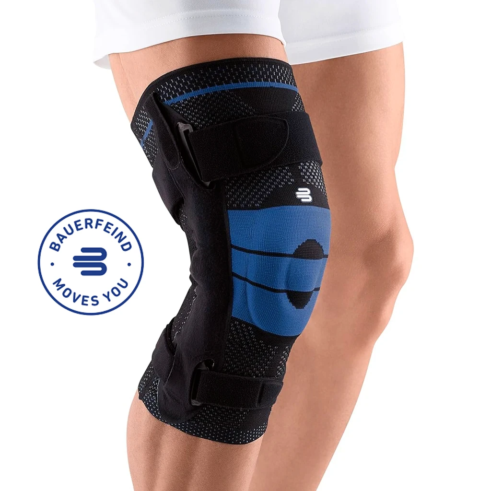
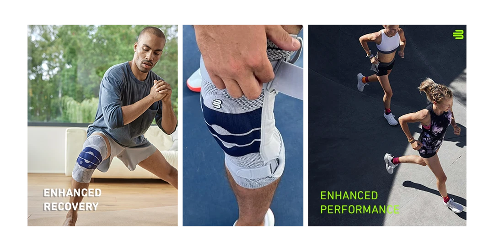
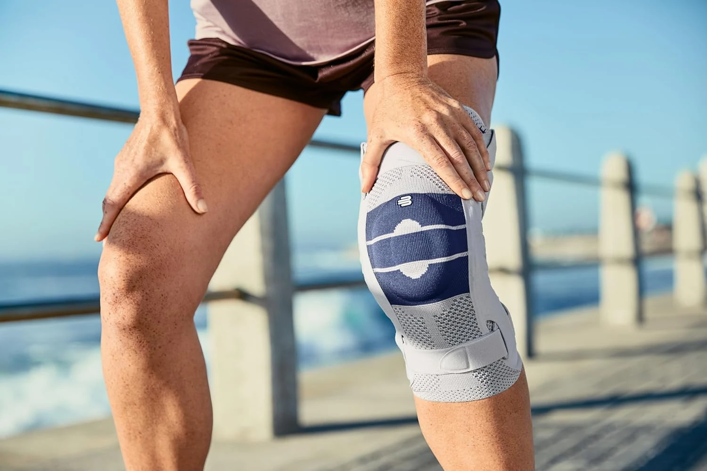

Chronic joint wear and arthritis don't have to define your lifestyle. The GenuTrain knee support is engineered to stabilize areas of cartilage degeneration, providing the compression and massage needed to soothe persistent aches.

Arthritis and joint degeneration are progressive, but your response can be proactive. Protecting the joint surface from excessive load is key to maintaining a high quality of life.
As cartilage thins, your joints lose their natural shock absorbers. GenuTrain provides external stabilization to help redistribute pressure during movement.
Degenerative joints often feel "locked" after rest. The medical knit fabric promotes circulation, helping to warm up the joint and reduce initial morning discomfort.
Arthritis often leads to recurring swelling. Our targeted compression helps move excess fluid out of the joint area to keep inflammation under control.


The GenuTrain doesn't just "cover" your knee; it actively interacts with your anatomy to compensate for joint wear and reduce bone-on-bone sensitivity.
The knit fabric provides a constant, gentle massage that activates blood flow, essential for managing long-term joint degeneration.
The Omega+ Pad cushions the patella and helps manage the load on worn cartilage surfaces during walking or climbing stairs.
Specially woven to be breathable and soft behind the knee, making it comfortable enough for all-day wear during errands or work.
When dealing with arthritis, the goal is to stay active without causing further wear. GenuTrain is your daily partner in mobility.
Protects the front of the joint, where many people experience the first signs of cartilage wear and grinding.
Stimulates the nerves around the joint to improve muscle support, compensating for the structural loss of degeneration.
By stabilizing the alignment, it helps reduce the uneven friction that accelerates cartilage breakdown.
Built to last through daily use, maintaining its compression levels far longer than standard generic elastic sleeves.
Equipped with donning aids so you can easily pull it into place even if you have arthritis in your hands.
Perfect for long periods of standing, walking, or light exercise, giving you back the freedom to move without fear.
Degeneration is a journey, but you don't have to walk it in pain. Invest in the medical-grade support that provides real stabilization for arthritic joints.
Medical Grade Quality. Trusted for Joint Care. Machine Washable.